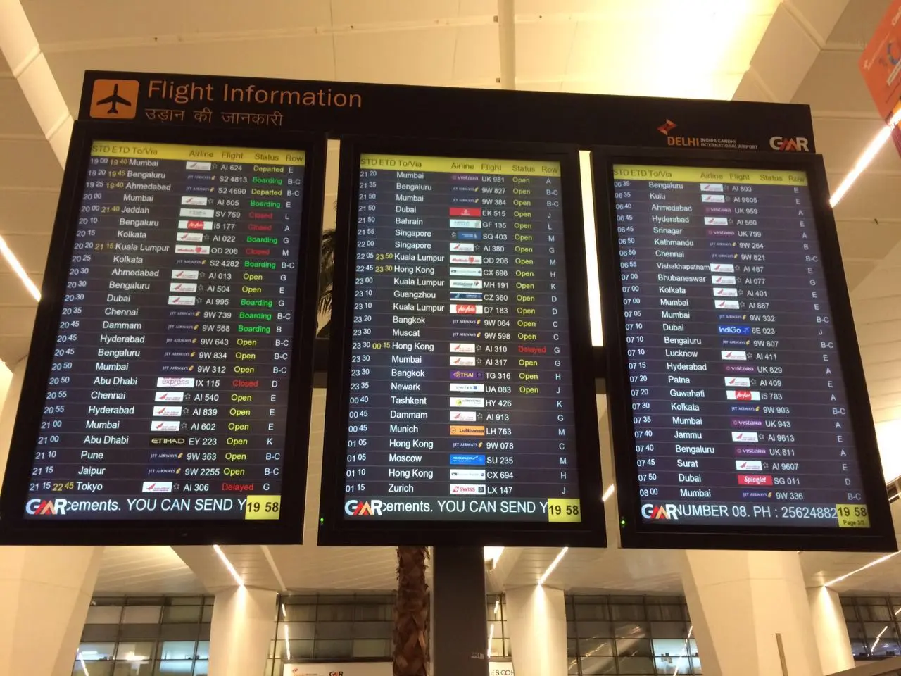

Chapter 20 of 22
The Buffalo Miracle
Sunday, December 1, 2024

It is often emphasized by our elders in the Jamaat that we should maintain a strong connection with Huzur, regularly writing to him and seeking his prayers. Building a personal relationship with the Khalifa is not only spiritually enriching but also a testament to the power of prayer. We’ve all heard stories of prayers being answered the moment a letter is written to Huzur—a living example of faith in Allah’s mercy and the blessings of Khilafat.
A Test of Faith at Delhi Airport
On Sunday, December 1, 2024, our Buffalo Group experienced firsthand the miracle of such prayers. After an incredible journey to Qadian, we arrived at Delhi Airport for our return flight with Air France at 6:30 am, connecting via Paris to Toronto.
What began as a routine check-in soon unraveled into a series of delays. The Air France flight was repeatedly postponed, causing concern among us. From my frequent travel experience, I suspected the delays might culminate in a cancellation. Anxiety grew within our group—children risked missing school, and several adults, including my co-chaperone Mohammad Ali Sahib and myself, had pressing work commitments waiting.
Sensing the gravity of the situation, I encouraged the children in our group to immediately write to Huzur. I submitted a letter through the Waqf-e-Nau website and contacted Mirza Harris Sahib, Secretary Waqf-e-Nau USA. Harris Sahib assured me he would also write to Huzur on our behalf, and I prayed that Allah would pave the way for us.
As feared, the flight was ultimately canceled, plunging the airport into chaos. For two hours, it seemed impossible to find a solution. The Air France staff, who had been so efficient in Toronto, seemed overwhelmed and unorganized in Delhi. The prospect of being stranded in Delhi for 2–3 days loomed over us—a scenario we could not afford.
Throughout the ordeal, I remained in contact with Harris Sahib, Mirza Nabeel Sahib (our trip coordinator), and Hanan Khan Sahib (our travel agent). But despite their efforts, progress felt stagnant. At one point, doubt crept into my mind: How could writing to Huzur possibly change this dire situation?
A Divine Intervention
Yet, Allah’s miracles often come when we least expect them. While most passengers from our flight were sent to hotels to await rescheduled flights, our group remained at the airport. Out of nowhere, an exhausted Air France agent walked past us. I recognized her as someone I had seen being berated by frustrated passengers earlier.
Curious about our group, she stopped to hear about our situation. Initially, she seemed dismissive, treating it as just another complaint. But then, something changed. She asked to see our passports. Despite her clear fatigue after working over 24 hours, she carefully reviewed every passport and started rebooking us.
To our astonishment, she managed to book every member of our group onto an Air India flight leaving later that evening. Her extraordinary effort in the midst of her exhaustion felt nothing short of divine intervention.
We flew out that evening, arriving home by Monday morning. As we reflected on the experience, it was clear that Allah’s grace had been at work.
Staying Connected with Khilafat
Later, when I shared this story with Harris Sahib, he jokingly remarked that Huzur must have prayed so much for the Buffalo Group that week, given the series of letters he’d received about us. I could only respond with a heartfelt, “Alhamdulillah.”
This experience reminded me—and everyone in our group—that Allah is indeed a Living God. He continues to show His signs to those who seek Him. Staying connected with Khilafat is not just a recommendation; it is a lifeline.
Write to Huzur. Seek his prayers. Build your connection with Khilafat. In doing so, you too will witness the wonders of Allah’s guidance in your life.
Alhamdulillah, we returned safely to our homes, our hearts filled with gratitude, and our faith strengthened through this unforgettable experience.